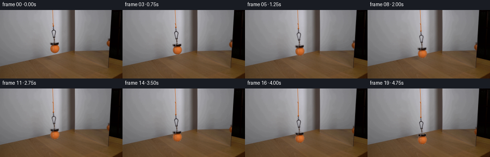
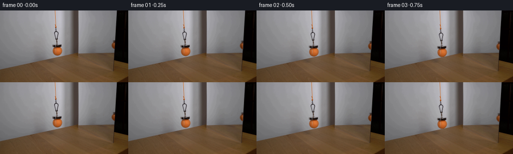

CODING AGENTS AS PIXEL WORLD MODELS
traex/GPT-6.1-Sol · 0117
点击播放 · 原生 RGB 像素
逐轮保存的候选
回放视频、检查图与代码变化。
每份候选均可单独播放。实际图片检查记录在下方工具轨迹中。
候选 01播放与检查图
点击播放 · 原生 RGB 像素


展开代码变化
--- 上一保存版本
+++ 本次保存版本
@@ -0,0 +1,167 @@
+from pathlib import Path
+import numpy as np
+from PIL import Image
+from scipy.interpolate import CubicSpline
+from scipy.ndimage import distance_transform_edt, gaussian_filter, map_coordinates
+from scipy.special import ndtr
+import artifact_io
+
+ROOT = Path(__file__).resolve().parent
+H, W = 144, 256
+YY, XX = np.mgrid[:H, :W].astype(float)
+
+
+def translate(a, dx, dy):
+ coords = np.array([YY-dy, XX-dx])
+ if a.ndim == 2:
+ return map_coordinates(a, coords, order=1, mode='constant', cval=0, prefilter=False)
+ return np.stack([map_coordinates(a[...,c], coords, order=1, mode='constant', cval=0, prefilter=False) for c in range(a.shape[2])], -1)
+
+
+def extract_layer(image, bg, zone, visibility=None):
+ # Infer subpixel coverage from the color of adjacent fully covered material.
+ delta = image-bg
+ length = np.linalg.norm(delta, axis=2)
+ core = zone & (length > 76)
+ if visibility is not None:
+ core = zone & (length > 58) & (visibility > .7)
+ dist, indices = distance_transform_edt(~core, return_indices=True)
+ nearest = delta[indices[0],indices[1]]
+ alpha = np.clip(np.sum(delta*nearest,axis=2)/(np.sum(nearest*nearest,axis=2)+1e-5),0,1)
+ alpha[core] = 1
+ alpha *= zone & (length > 8) & (dist < 3.5)
+ # Unpremultiplication removes the gray backdrop from antialiased edges.
+ alpha[length < 9] = 0
+ if visibility is not None:
+ alpha = np.minimum(alpha, visibility)
+ color = np.clip(bg + delta/np.maximum(alpha[...,None], .001),0,255)
+ return color, alpha
+
+
+def generate():
+ original = np.array(Image.open(ROOT/'first_frame.png').convert('RGB'),dtype=np.uint8)
+ image = original.astype(float)
+ # The wall is a gently lit neutral surface. Reconstruct only the small area
+ # revealed by the lowering assembly, from its untouched neighboring samples.
+ bg = image.copy()
+ profile = np.mean(image[60:67],axis=0)
+ knots = np.r_[np.arange(94,111),np.arange(115,140)]
+ curve = CubicSpline(knots,profile[knots],axis=0)
+ xs = np.arange(100,128)
+ p = curve(xs)
+ model = image.copy()
+ for y in range(32,93):
+ dl = np.mean(image[y,99:104]-curve(np.arange(99,104)),axis=0)
+ dr = np.mean(image[y,126:132]-curve(np.arange(126,132)),axis=0)
+ blend = ((xs-101.0)/(128.5-101.0))[:,None]
+ model[y,xs] = p + dl*(1-blend)+dr*blend
+ zone = np.zeros((H,W),bool)
+ zone[32:42,109:115] = True
+ zone[42:59,107:118] = True
+ zone[59:67,111:116] = True
+ zone[67:74,103:125] = True
+ zone[74:92,103:127] = True
+ main_color, main_a = extract_layer(image, model, zone)
+ # The clean plate is changed solely where the original object was visible.
+ clean_mask = main_a > 0
+ bg[clean_mask] = model[clean_mask]
+
+ # There is a smaller, partially occluded image at the mirror's right edge.
+ # Its edge stays fixed; it must not travel with the reflected ball.
+ vx = np.zeros((H,W),float)
+ reflection_bg = image.copy()
+ for y in range(48,85):
+ wall = np.mean(image[y,214:220],axis=0)
+ wall += np.array([-3.,-3.,-3.])
+ frame = np.mean(image[y,232:236],axis=0)
+ for x in range(220,232):
+ # The mirror edge is nearly straight, but its photographed pixel
+ # coverage is estimated directly from clear rows above and below.
+ clear_y = np.r_[np.arange(43,59),np.arange(78,85)]
+ ratios=[]
+ for sy in clear_y:
+ bw = np.mean(image[sy,214:220],axis=0)[0]-3
+ dark = np.mean(image[sy,232:236],axis=0)[0]
+ ratios.append(np.clip((image[sy,x,0]-dark)/(bw-dark),0,1))
+ if x < 228:
+ v = 1.0
+ else:
+ fit = np.polyfit(clear_y,np.asarray(ratios),2)
+ v = np.clip(np.polyval(fit,y),0,1)
+ vx[y,x] = v
+ reflection_bg[y,x] = wall*v+frame*(1-v)
+ reflect_zone = np.zeros((H,W),bool)
+ reflect_zone[59:78,221:231] = True
+ reflect_color, reflect_a = extract_layer(image,reflection_bg,reflect_zone,visibility=vx)
+ reflection_clear = reflect_a > 0
+ bg[reflection_clear] = reflection_bg[reflection_clear]
+ # Recover the wall-side color before applying the fixed edge at each new y.
+ vv = np.maximum(vx, .03)
+ dark = np.zeros_like(image)
+ for y in range(H):
+ dark[y] = np.mean(image[y,232:236],axis=0)
+ reflected_wall = np.zeros_like(image)
+ for y in range(H):
+ reflected_wall[y] = np.mean(image[y,214:220],axis=0)-3
+ reflect_opacity = np.clip(reflect_a/vv,0,1)
+ reflect_foreground = np.clip(reflected_wall+(image-reflection_bg)/np.maximum(reflect_a[...,None],.001),0,255)
+ # Build edge coverage for the complete sweep, avoiding any moving frame.
+ edge = np.clip(233.21-.0635*YY,0,255)
+ fixed_visibility = ndtr((edge-XX)/.48)
+ for y in range(48,85):
+ fixed_visibility[y,220:232] = vx[y,220:232]
+ # Below the photographed sphere, estimate the edge from clear source pixels.
+ for y in range(78,99):
+ wall = np.mean(image[y,214:220],axis=0)[0]-3
+ d = np.mean(image[y,232:236],axis=0)[0]
+ fixed_visibility[y,220:232] = np.clip((image[y,220:232,0]-d)/max(wall-d,1),0,1)
+
+ frames = [original]
+ for i in range(1,20):
+ t = i/4.0
+ # Slow hand-controlled lowering; the first/last half-second ease gently.
+ u = i/19.0
+ easing = u - .055*np.sin(2*np.pi*u)
+ dy = 27.0*easing
+ dx = .23*np.sin(np.pi*u)*np.sin(1.4*np.pi*u)
+ f = bg.copy()
+ # Feed more orange cord from above, rather than translating its anchor.
+ endpoint_x = 111.05 + dx
+ end_y = 32.5+dy
+ yfactor = np.clip((YY-31.0)/1.25,0,1)*np.clip((end_y+1.0-YY)/1.25,0,1)
+ center = 110.85+(endpoint_x-110.85)*np.clip((YY-31)/(dy+2),0,1)
+ string_a = np.clip(1.24-np.abs(XX-center),0,1)*yfactor
+ string_a *= (YY >= 31) & (YY <= end_y+1.0)
+ # Lit orange threads have a darker edge and subtle woven variation.
+ c = np.zeros_like(f)
+ twill = 2.0*np.sin(YY*2.65)
+ c[...,0] = 192+twill
+ c[...,1] = 108+twill*.8
+ c[...,2] = 55+twill*.5
+ f = f*(1-string_a[...,None])+c*string_a[...,None]
+ # The rigid ball, magnet and hanging clip share exactly one translation.
+ a = translate(main_a,dx,dy)
+ premul = translate(main_color*main_a[...,None],dx,dy)
+ f = f*(1-a[...,None])+premul
+ # Perspective makes the virtual image's vertical movement slightly less.
+ rdy = .77*dy
+ rdx = -.13*dx
+ ra = translate(reflect_opacity,rdx,rdy)*fixed_visibility
+ rp = translate(reflect_foreground*reflect_opacity[...,None],rdx,rdy)*fixed_visibility[...,None]
+ f = f*(1-ra[...,None])+rp
+ frames.append(np.clip(np.rint(f),0,255).astype(np.uint8))
+ frames = np.stack(frames)
+ artifact_io.save(frames, ROOT)
+ # A conventional preview in addition to the required lossless RGB artifact.
+ try:
+ import imageio.v2 as imageio
+ with imageio.get_writer(ROOT/'video.mp4',fps=4,codec='libx264',quality=9,macro_block_size=None,pixelformat='yuv420p') as writer:
+ for frame in frames:
+ writer.append_data(frame)
+ except (ImportError, OSError):
+ pass
+ np.savez_compressed(ROOT/'.tmp'/'layers.npz', background=bg, main_alpha=main_a, reflect_alpha=reflect_opacity)
+ return frames
+
+if __name__ == '__main__':
+ generate()
可观测工具轨迹
实际执行的命令与返回图片。
命令 1exit 0
/bin/bash -lc 'ls -la && cat prompt.txt && cat GENERATION_RULES.md'
命令 2exit 0
/bin/bash -lc "cat artifact_io.py && python - <<'PY'
from PIL import Image
import numpy as np
im=np.array(Image.open('first_frame.png'))
print(im.shape)
for y in range(0,144,4):
s=''
for x in range(0,256,3):
r,g,b=im[y:y+4,x:x+3].mean((0,1))
if r>170 and g>130 and b<120:c='Y'
elif r>130 and g>65 and r>g*1.3 and g>b*1.25:c='O'
elif g>r*1.15 and g>b*1.15:c='G'
elif max(r,g,b)<45:c='#'
elif max(r,g,b)<95:c='x'
elif min(r,g,b)>200:c=' '
elif min(r,g,b)>160:c='.'
elif min(r,g,b)>115:c=':'
else:c=';'
s+=c
print(f'{y:03d} '+s)
PY"命令 3exit 0
/bin/bash -lc "python - <<'PY'
from PIL import Image
import numpy as np
im=np.array(Image.open('first_frame.png'))
for y in [0,20,40,55,65,70,74,78,82,86,90,95,100,110,130]:
print('\\ny',y,[(x,im[y,x].tolist()) for x in [0,60,90,100,105,110,115,120,125,130,135,140,145,150,155,160,175,200,225,235,245]])
print('\\nDetailed crop 90:140,20:100')
for y in range(20,101):
s=''
for x in range(90,141):
r,g,b=im[y,x].astype(float)
if r>g*1.3 and r>b*1.5 and r>120:c='O' if r>180 else 'o'
elif r>g*1.15 and r>b*1.3:c='+'
elif max(r,g,b)<40:c='#'
elif max(r,g,b)<80:c='X'
elif max(r,g,b)<110:c='x'
elif max(r,g,b)<140:c=':'
elif max(r,g,b)<165:c='.'
elif max(r,g,b)<185:c='-'
else:c=' '
s+=c
print(f'{y:3} '+s)
PY"命令 4exit 0
/bin/bash -lc "python - <<'PY'
from PIL import Image
import numpy as np
from scipy.ndimage import label,find_objects
im=np.array(Image.open('first_frame.png')).astype(float)
r,g,b=im.transpose(2,0,1)
m=(r-g>20)&(r-b>30)&(g-b>12)&(r>105)
l,n=label(m)
for i,s in enumerate(find_objects(l)):
if (l[s]==i+1).sum()>5:print(i+1,s,'n=',(l[s]==i+1).sum())
for y in range(0,100):
s=''
for x in range(200,245):
r,g,b=im[y,x]
if r>g*1.3 and r>b*1.5 and r>120:c='O' if r>180 else 'o'
elif r-g>15 and r-b>22:c='+'
elif max(r,g,b)<30:c='#'
elif max(r,g,b)<65:c='X'
elif max(r,g,b)<95:c='x'
elif max(r,g,b)<120:c=':'
elif max(r,g,b)<145:c='.'
elif max(r,g,b)<165:c='-'
else:c=' '
s+=c
print(f'{y:3} '+s)
PY"命令 5exit 0
/bin/bash -lc "python - <<'PY'
import numpy as np
from PIL import Image
im=np.array(Image.open('first_frame.png')).astype(int)
print('REFLECTION full resolution:')
for y in range(0,86,2):
print(y,[(x,tuple(im[y,x])) for x in range(211,233)])
print('MAIN structure')
for y in [28,34,38,42,46,50,54,58,62,66,68,69,70,71,72,73,74,75,80,86,90,92]:
print(y,[(x,tuple(im[y,x])) for x in range(102,125)])
PY"命令 6exit 0
/bin/bash -lc "python - <<'PY'
import importlib.util
for m in ['scipy','cv2','imageio','imageio_ffmpeg']:print(m,bool(importlib.util.find_spec(m)))
from PIL import Image
import numpy as np
im=np.array(Image.open('first_frame.png')).astype(int)
for y in range(30,69):
print(y,' '.join('%3d'%v for v in im[y,105:121,0]))
print('reflection r/g/b rows x215:233')
for y in range(48,81):
print(y,' '.join('%d,%d,%d'%tuple(v) for v in im[y,215:234]))
PY"命令 7exit 0
/bin/bash -lc "python - <<'PY'
import numpy as np
from PIL import Image
im=np.array(Image.open('first_frame.png')).astype(float)
for y in range(0,105,5):
print(y,[(x,im[y,x].astype(int).tolist()) for x in range(227,235)])
PY"命令 8exit 0
/bin/bash -lc "python - <<'PY'
import numpy as np
from PIL import Image
im=np.array(Image.open('first_frame.png')).astype(float)
for y in range(74,92):
a=im[y,102:128,0]-im[y,102:128,1]
print(y,','.join(str(round(v)) for v in a))
# background around thin cord
for y in [0,5,10,15,20,25,30,33,34]:
print('cord',y,im[y,108:114].astype(int).tolist())
PY"命令 9exit 0
/bin/bash -lc "cat > generate.py <<'PY'
from pathlib import Path
import numpy as np
from PIL import Image
from scipy.interpolate import CubicSpline
from scipy.ndimage import distance_transform_edt, gaussian_filter, map_coordinates
from scipy.special import ndtr
import artifact_io
ROOT = Path(__file__).resolve().parent
H, W = 144, 256
YY, XX = np.mgrid[:H, :W].astype(float)
def translate(a, dx, dy):
coords = np.array([YY-dy, XX-dx])
if a.ndim == 2:
return map_coordinates(a, coords, order=1, mode='constant', cval=0, prefilter=False)
return np.stack([map_coordinates(a[...,c], coords, order=1, mode='constant', cval=0, prefilter=False) for c in range(a.shape[2])], -1)
def extract_layer(image, bg, zone, visibility=None):
# Infer subpixel coverage from the color of adjacent fully covered material.
delta = image-bg
length = np.linalg.norm(delta, axis=2)
core = zone & (length > 76)
if visibility is not None:
core = zone & (length > 58) & (visibility > .7)
dist, indices = distance_transform_edt(~core, return_indices=True)
nearest = delta[indices[0],indices[1]]
alpha = np.clip(np.sum(delta*nearest,axis=2)/(np.sum(nearest*nearest,axis=2)+1e-5),0,1)
alpha[core] = 1
alpha *= zone & (length > 8) & (dist < 3.5)
# Unpremultiplication removes the gray backdrop from antialiased edges.
alpha[length < 9] = 0
if visibility is not None:
alpha = np.minimum(alpha, visibility)
color = np.clip(bg + delta/np.maximum(alpha[...,None], .001),0,255)
return color, alpha
def generate():
original = np.array(Image.open(ROOT/'first_frame.png').convert('RGB'),dtype=np.uint8)
image = original.astype(float)
# The wall is a gently lit neutral surface. Reconstruct only the small area
# revealed by the lowering assembly, from its untouched neighboring samples.
bg = image.copy()
profile = np.mean(image[60:67],axis=0)
knots = np.r_[np.arange(94,111),np.arange(115,140)]
curve = CubicSpline(knots,profile[knots],axis=0)
xs = np.arange(100,128)
p = curve(xs)
model = image.copy()
for y in range(32,93):
dl = np.mean(image[y,99:104]-curve(np.arange(99,104)),axis=0)
dr = np.mean(image[y,126:132]-curve(np.arange(126,132)),axis=0)
blend = ((xs-101.0)/(128.5-101.0))[:,None]
model[y,xs] = p + dl*(1-blend)+dr*blend
zone = np.zeros((H,W),bool)
zone[32:42,109:115] = True
zone[42:59,107:118] = True
zone[59:67,111:116] = True
zone[67:74,103:125] = True
zone[74:92,103:127] = True
main_color, main_a = extract_layer(image, model, zone)
# The clean plate is changed solely where the original object was visible.
clean_mask = main_a > 0
bg[clean_mask] = model[clean_mask]
# There is a smaller, partially occluded image at the mirror's right edge.
# Its edge stays fixed; it must not travel with the reflected ball.
vx = np.zeros((H,W),float)
reflection_bg = image.copy()
for y in range(48,85):
wall = np.mean(image[y,214:220],axis=0)
wall += np.array([-3.,-3.,-3.])
frame = np.mean(image[y,232:236],axis=0)
for x in range(220,232):
# The mirror edge is nearly straight, but its photographed pixel
# coverage is estimated directly from clear rows above and below.
clear_y = np.r_[np.arange(43,59),np.arange(78,85)]
ratios=[]
for sy in clear_y:
bw = np.mean(image[sy,214:220],axis=0)[0]-3
dark = np.mean(image[sy,232:236],axis=0)[0]
ratios.append(np.clip((image[sy,x,0]-dark)/(bw-dark),0,1))
if x < 228:
v = 1.0
else:
fit = np.polyfit(clear_y,np.asarray(ratios),2)
v = np.clip(np.polyval(fit,y),0,1)
vx[y,x] = v
reflection_bg[y,x] = wall*v+frame*(1-v)
reflect_zone = np.zeros((H,W),bool)
reflect_zone[59:78,221:231] = True
reflect_color, reflect_a = extract_layer(image,reflection_bg,reflect_zone,visibility=vx)
reflection_clear = reflect_a > 0
bg[reflection_clear] = reflection_bg[reflection_clear]
# Recover the wall-side color before applying the fixed edge at each new y.
vv = np.maximum(vx, .03)
dark = np.zeros_like(image)
for y in range(H):
dark[y] = np.mean(image[y,232:236],axis=0)
reflected_wall = np.zeros_like(image)
for y in range(H):
reflected_wall[y] = np.mean(image[y,214:220],axis=0)-3
reflect_opacity = np.clip(reflect_a/vv,0,1)
reflect_foreground = np.clip(reflected_wall+(image-reflection_bg)/np.maximum(reflect_a[...,None],.001),0,255)
# Build edge coverage for the complete sweep, avoiding any moving frame.
edge = np.clip(233.21-.0635*YY,0,255)
fixed_visibility = ndtr((edge-XX)/.48)
for y in range(48,85):
fixed_visibility[y,220:232] = vx[y,220:232]
# Below the photographed sphere, estimate the edge from clear source pixels.
for y in range(78,99):
wall = np.mean(image[y,214:220],axis=0)[0]-3
d = np.mean(image[y,232:236],axis=0)[0]
fixed_visibility[y,220:232] = np.clip((image[y,220:232,0]-d)/max(wall-d,1),0,1)
frames = [original]
for i in range(1,20):
t = i/4.0
# Slow hand-controlled lowering; the first/last half-second ease gently.
u = i/19.0
easing = u - .055*np.sin(2*np.pi*u)
dy = 27.0*easing
dx = .23*np.sin(np.pi*u)*np.sin(1.4*np.pi*u)
f = bg.copy()
# Feed more orange cord from above, rather than translating its anchor.
endpoint_x = 111.05 + dx
end_y = 32.5+dy
yfactor = np.clip((YY-31.0)/1.25,0,1)*np.clip((end_y+1.0-YY)/1.25,0,1)
center = 110.85+(endpoint_x-110.85)*np.clip((YY-31)/(dy+2),0,1)
string_a = np.clip(1.24-np.abs(XX-center),0,1)*yfactor
string_a *= (YY >= 31) & (YY <= end_y+1.0)
# Lit orange threads have a darker edge and subtle woven variation.
c = np.zeros_like(f)
twill = 2.0*np.sin(YY*2.65)
c[...,0] = 192+twill
c[...,1] = 108+twill*.8
c[...,2] = 55+twill*.5
f = f*(1-string_a[...,None])+c*string_a[...,None]
# The rigid ball, magnet and hanging clip share exactly one translation.
a = translate(main_a,dx,dy)
premul = translate(main_color*main_a[...,None],dx,dy)
f = f*(1-a[...,None])+premul
# Perspective makes the virtual image's vertical movement slightly less.
rdy = .77*dy
rdx = -.13*dx
ra = translate(reflect_opacity,rdx,rdy)*fixed_visibility
rp = translate(reflect_foreground*reflect_opacity[...,None],rdx,rdy)*fixed_visibility[...,None]
f = f*(1-ra[...,None])+rp
frames.append(np.clip(np.rint(f),0,255).astype(np.uint8))
frames = np.stack(frames)
artifact_io.save(frames, ROOT)
# A conventional preview in addition to the required lossless RGB artifact.
try:
import imageio.v2 as imageio
with imageio.get_writer(ROOT/'video.mp4',fps=4,codec='libx264',quality=9,macro_block_size=None,pixelformat='yuv420p') as writer:
for frame in frames:
writer.append_data(frame)
except (ImportError, OSError):
pass
np.savez_compressed(ROOT/'.tmp'/'layers.npz', background=bg, main_alpha=main_a, reflect_alpha=reflect_opacity)
return frames
if __name__ == '__main__':
generate()
PY
python generate.py"命令 10exit 0
/bin/bash -lc "python - <<'PY'
from PIL import Image
import numpy as np
from scipy.ndimage import label,find_objects
layer=np.load('.tmp/layers.npz')
a=layer['main_alpha'];r=layer['reflect_alpha']
print('MAIN mask')
for y in range(30,93):
print('%3d'%y,''.join(' ' if z==0 else '.' if z<.2 else ':' if z<.6 else '+' if z<.95 else '#' for z in a[y,100:129]))
print('reflection alpha')
for y in range(57,80):
print('%3d'%y,''.join(' ' if z==0 else '.' if z<.2 else ':' if z<.6 else '+' if z<.95 else '#' for z in r[y,218:234]))
for i in [1,10,19]:
im=np.array(Image.open('frames/%02d.png'%i)).astype(float)
print('frame',i)
for y in range(55,125,2):
s=''
for x in range(99,130):
rr,g,b=im[y,x]
if rr-g>25:c='O'
elif rr<40:c='#'
elif rr<95:c='x'
elif rr<130:c=':'
elif rr<155:c='.'
elif rr<178:c='-'
else:c=' '
s+=c
print(y,s)
print('reflection RGB anomaly')
for y in range(59,102):
an=np.max(im[y,220:232,0]-im[y,220:232,1])
if an>10: print(y,round(an))
PY"命令 11exit 0
/bin/bash -lc "python - <<'PY'
import numpy as np
from PIL import Image
from pathlib import Path
p=np.load('pixels.npz')['pixels']
a=np.array(Image.open('first_frame.png').convert('RGB'))
b=np.array(Image.open('frames/00.png').convert('RGB'))
assert np.array_equal(a,b)
assert p.shape==(144,256,20)
for i in range(20):
f=np.array(Image.open('frames/%02d.png'%i))
assert f.shape==(144,256,3) and f.dtype==np.uint8
print('Validated: 20 RGB frames, 256Ã144; frame 00 exactly matches input.')
for name in ['generate.py','pixels.npz','video.mp4','index.html']:
print(name,Path(name).stat().st_size,'bytes')
PY"保存候选 1 份；完成命令 11 次；可验证图片返回 0 张。原始 API 响应与完整日志保留在本地。